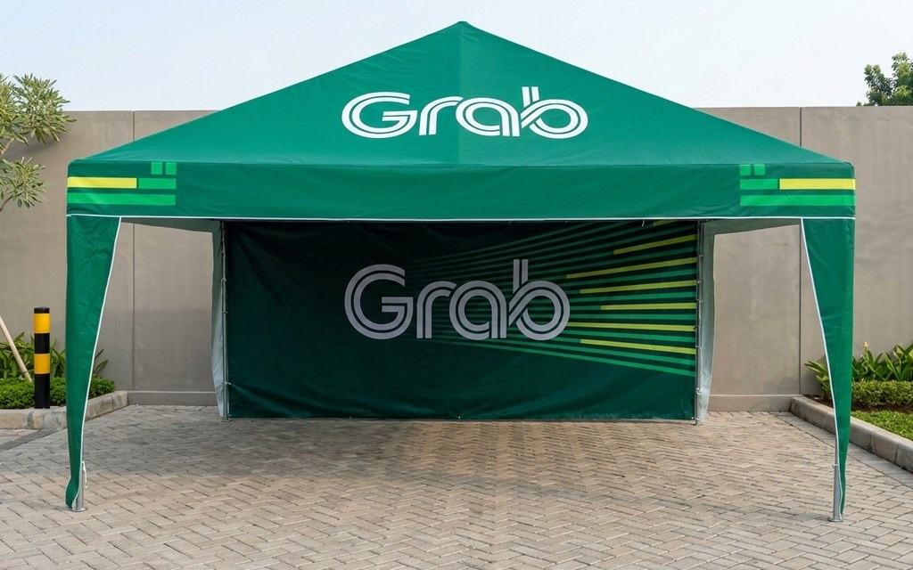
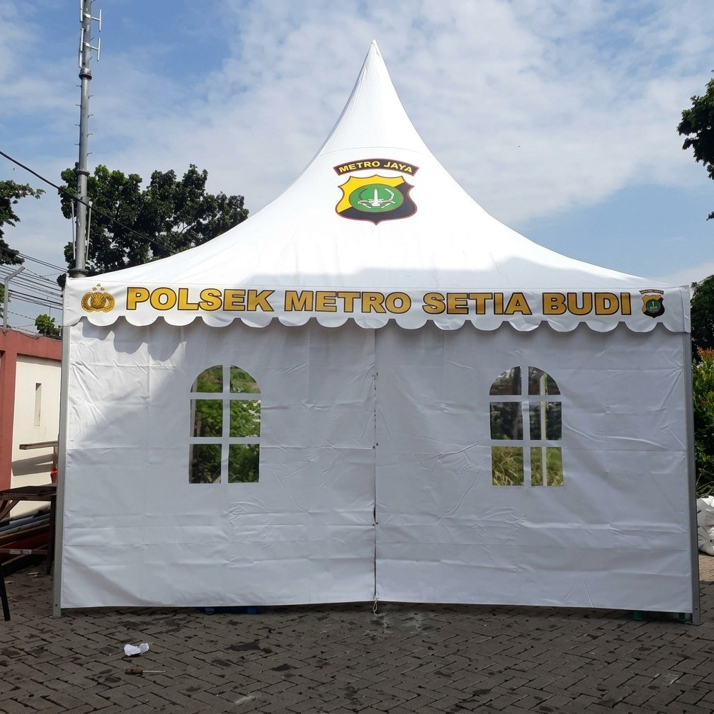
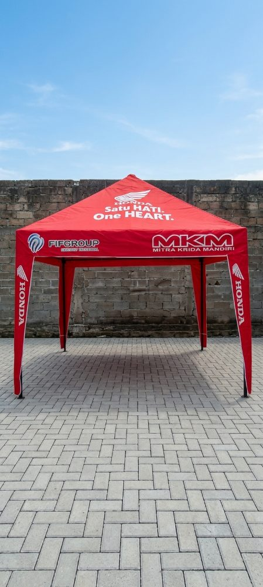
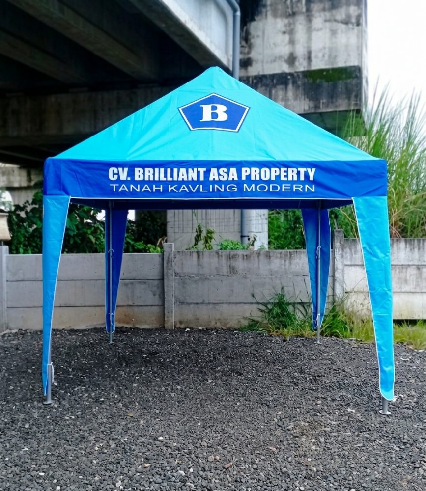
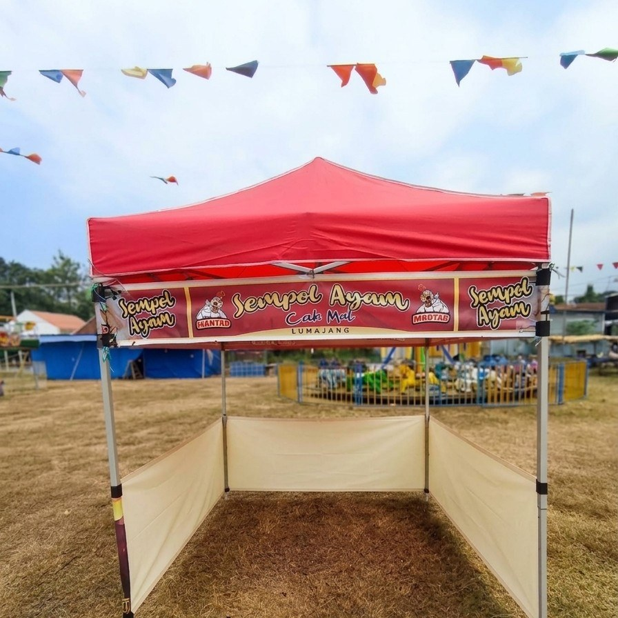
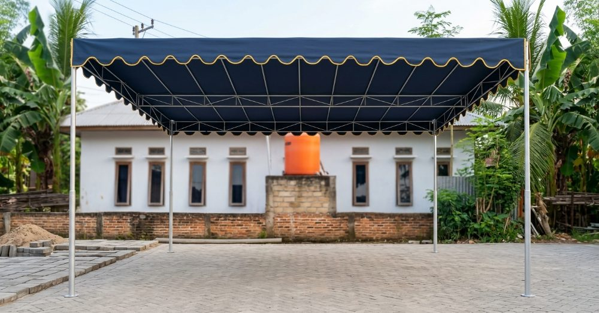
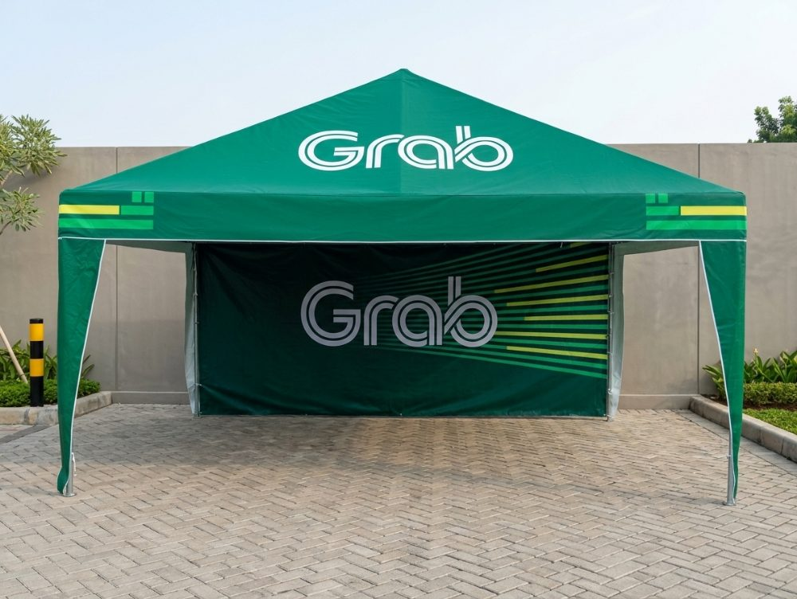

Pabrik & Produsen Tenda Jatim Murah Melayani Seluruh Jawa Timur
Mencari supplier atau pabrik tenda Jatim berkualitas tinggi dengan harga murah langsung produsen? Wiguna Tenda memproduksi dan mendistribusikan aneka tenda kerucut pameran, tenda bazar promosi UMKM, tenda limas, lipat praktis, serta fabrikasi terpal custom bergaransi ke seluruh kota dan kabupaten di Jawa Timur. Hemat biaya pengadaan tanpa perantara makelar!

Katalog Produk Tenda Murah Berkualitas untuk Wilayah Jatim
Pilihan ukuran standar maupun custom sesuai pesanan instansi, perusahaan, dan UMKM di Jawa Timur.

Tenda Kerucut Jawa Timur
Tenda kerucut sarnafil berdesain mewah dan elegan. Banyak dipesan oleh dinas pemerintah daerah, perbankan, BUMN, dan event organizer di berbagai kota Jawa Timur.
- Ukuran: 2x2m, 2.5x2.5m, 3x3m, 4x4m, 5x5m
- Rangka: Pipa besi hollow tebal anti bengkok
- Atap: Uno Jerman 410gsm / 550gsm Waterproof
- Branding: Siap sablon logo instansi & sponsor

Tenda Promosi & Bazar Jatim
Tenda promosi dan lapak jualan untuk UMKM kuliner di sentra pasar malam, event pameran kabupaten, CFD, dan promosi dealer motor/mobil se-Jawa Timur.
- Ukuran: 2x2m, 2x3m, 3x3m, 3x4m
- Karakteristik: Ringkas, kuat, bongkar pasang cepat
- Dinding: Tersedia mika transparan atau kain tertutup
- Harga: Harga grosir langsung dari pabrik tangan pertama

Tenda Limas (Piramida) Jatim
Konstruksi piramida kokoh tanpa tiang penyangga di tengah. Pilihan utama untuk posko pemilu, posko mudik lebaran jalan tol Jatim, dan stand pameran luar ruangan.
- Ukuran: 3x3m, 3x4m, 4x4m, 4x6m
- Kekuatan: Tahan terpaan hujan deras dan angin lebat
- Kain: Terpal Tarpaulin tebal tahan panas matahari
- Sablon: Bebas pesan sablon nama daerah / logo

Tenda Lipat Portable Jatim
Tenda lipat modern sistem accordion yang dapat dipasang kurang dari 5 menit tanpa perlu merakit sambungan pipa. Sangat diminati pedagang dan sales pameran Jawa Timur.
- Ukuran: 2x2m, 2x3m, 3x3m, 3x4.5m
- Rangka: Besi hollow lapis coating anti korosi
- Kelebihan: Praktis diangkut motor atau bagasi mobil
- Stok: Ready stock berbagai varian warna

Tenda Pesta & Persewaan Jatim
Melayani pembuatan tenda plafon serut, tenda tratak, dan tenda panggung hajatan untuk pengusaha jasa persewaan tenda (sewa tratak) di seluruh pelosok Jawa Timur.
- Bentang: Lebar 4m, 6m, 8m, 10m sesuai kebutuhan
- Dekorasi: Plafon serut warna kombinasi elegan
- Harga: Paket partai murah untuk peremajaan alat sewa
- Rangka: Pipa besi hitam / galvanis tebal kokoh

Terpal Custom & Tenda Khusus Jatim
Fabrikasi terpal penutup muatan truk ekspedisi Pantura Jatim, terpal kolam budidaya lele/udang, penutup mesin pabrik industri, serta payung taman cafe outdoor.
- Bahan: Terpal Plastik A3 - A12, Tarpaulin PVC Orchid, Uno
- Pengerjaan: Pres panas presisi anti-rembes dan mata ayam keliling
- Ukuran: Bebas pesan panjang x lebar berapa saja
- Pemesanan: Siap kirim roll atau lembaran jadi
Siap Kirim ke Seluruh 38 Kota & Kabupaten di Jawa Timur
Kerjasama ekspedisi cargo terpercaya memastikan pesanan tenda Anda sampai dengan aman dan cepat tepat di alamat tujuan.
Gerbangkertosusila & Sekitarnya
Layanan armada langsung dan kurir cepat untuk wilayah metropolitan:
- Kota Surabaya & Gresik
- Kabupaten Sidoarjo & Krian
- Kota & Kabupaten Mojokerto
- Kabupaten Lamongan & Tuban
- Pulau Madura: Bangkalan, Sampang, Pamekasan, Sumenep
Malang Raya & Tapal Kuda
Pengiriman cargo harian ke wilayah dataran tinggi & pesisir timur:
- Kota Malang, Kota Batu & Kab. Malang
- Kota & Kab. Pasuruan & Probolinggo
- Kabupaten Lumajang & Jember
- Kabupaten Situbondo & Bondowoso
- Kabupaten Banyuwangi
Mataraman & Jalur Barat Jatim
Pengiriman reguler 1-2 hari via ekspedisi terpercaya:
- Kota & Kabupaten Kediri
- Kota & Kabupaten Blitar
- Kabupaten Tulungagung & Trenggalek
- Kota & Kabupaten Madiun
- Kabupaten Nganjuk, Ngawi, Magetan, Pacitan & Bojonegoro
Pertanyaan Umum Pemesanan Tenda di Jawa Timur
Ya, kami melayani pengiriman tenda dan terpal custom ke seluruh 38 kota dan kabupaten di Jawa Timur, termasuk Surabaya, Malang, Sidoarjo, Mojokerto, Pasuruan, Jember, Kediri, Madiun, Banyuwangi, Lamongan, Tuban, hingga Madura. Pengiriman menggunakan armada toko langsung atau ekspedisi cargo terpercaya seperti Dakota, Baraka, dan Indah Cargo.
Tidak ada minimal order! Kami melayani pemesanan satuan (1 unit) untuk UMKM maupun pemesanan partai besar / pengadaan puluhan unit tenda untuk instansi pemerintah, BUMN, perbankan, dan event organizer di Jawa Timur.
Karena Wiguna Tenda adalah produsen tangan pertama dengan workshop sendiri di Driyorejo. Anda mendapatkan harga grosir pabrik yang jauh lebih murah dibanding harga toko di daerah Anda, spesifikasi pipa besi lebih tebal, dan terpal bergaransi resmi.
Konsultasikan kebutuhan ukuran dan desain via WhatsApp tim kami di 0895-1053-2984. Kami buatkan invoice resmi dan mock-up desain sablon. Setelah proses produksi selesai, tenda dikemas aman dan dikirim menggunakan resi cargo resmi langsung sampai ke alamat Anda.
Butuh Tenda Murah Langsung dari Pabrik Produsen di Jawa Timur?
Dapatkan harga grosir pabrik termurah untuk kebutuhan tenda promosi, bazar, kerucut pameran, atau pengadaan proyek di Jawa Timur. Hubungi tim kami sekarang!